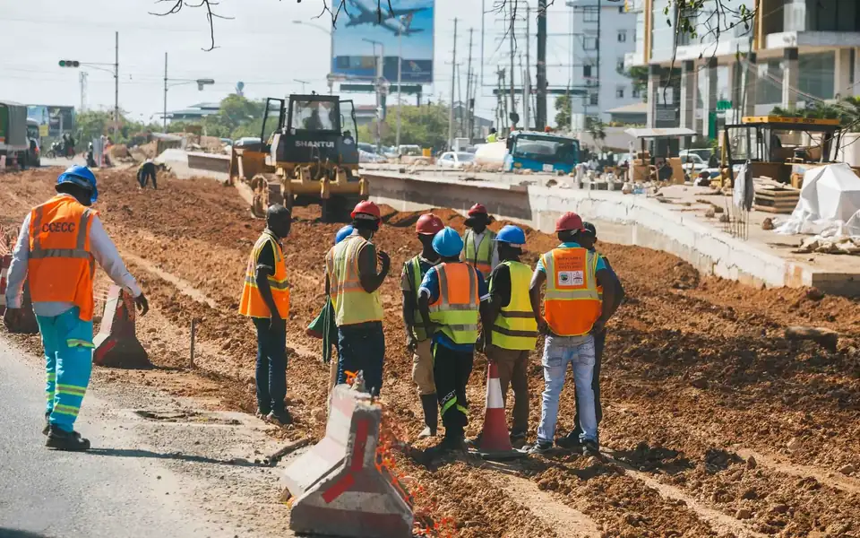

Domaines d'intervention
Des compétences coordonnées autour des besoins du terrain.
ECCOTA-EPF intervient dans les domaines formulés dans sa lettre de candidature : transport, construction, génie civil et rural, aménagements, bâtiments, rénovations, équipements et fournitures.

Domaine 01
Bâtiments et construction
Construction de bâtiments, équipements collectifs, logements de fonction, hangars et locaux administratifs.
- Préparation et installation de chantier
- Gros œuvre et second œuvre
- Équipements associés et finitions

Domaine 02
Génie civil et ouvrages
Ouvrages de génie civil et rural, ouvrages de franchissement et interventions sur infrastructures utiles aux territoires.
- Ouvrages en béton armé
- Ouvrages de franchissement
- Aménagements et infrastructures rurales

Domaine 03
Infrastructures sanitaires et scolaires
Construction, rénovation et équipement d'infrastructures de santé et d'établissements scolaires.
- Salles de classe et bureaux
- Centres de santé et latrines
- Équipements et installations techniques

Domaine 04
Rénovation et entretien
Rénovation en peinture, entretiens, réparations matérielles et mobilières sur bâtiments existants.
- Rénovation de bâtiments
- Entretiens et réparations
- Reprise des finitions

Domaine 05
Fournitures diverses
Fourniture d'équipements et installations selon les besoins exprimés par le donneur d'ordre.
- Fourniture d'équipements
- Installations électriques
- Mise à disposition selon cahier des charges

Domaine 06
Transport
Transport de travailleurs et soutien logistique aux activités de terrain.
- Organisation des rotations
- Transport de personnel
- Coordination avec les sites d'exploitation

Domaine 07
Agropastoral et aménagements
Projets d'aménagements, infrastructures d'irrigation et équipements liés aux activités agropastorales.
- Réhabilitation d'infrastructures d'irrigation
- Magasins et aires de battage
- Aménagements agricoles
Votre besoin